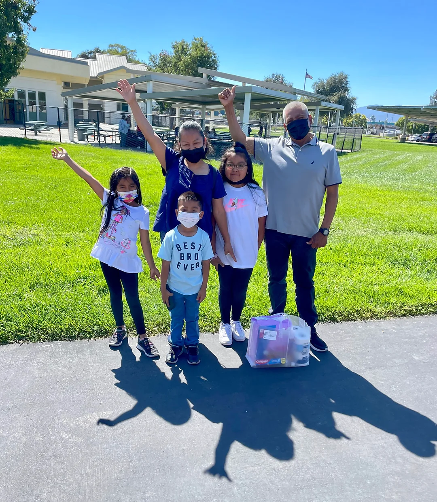
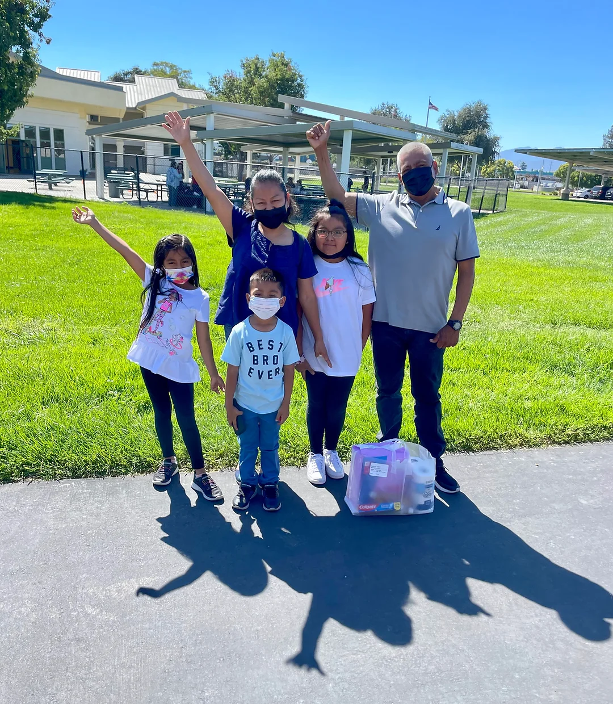

Software built for the Sunday Friends nonprofit empowering low-income families in San Jose to achieve economic mobility.
Sunday Friends is a non-profit based in San Jose, California dedicated to breaking the generational cycle of poverty by fostering positive development in children while educating parents to support their children's life success.
Over the course of two semesters, my engineering team at Cal Blueprint developed 2 apps, one mobile and one on web. As the lead designer from start to finish, I worked closely with the non-profit to evaluate the core needs of their organization and propose a feasible technical solution to be built out in less than a year. The mobile app will be used by families (children and parents), while the web app will be used by Sunday Friends admins.
I designed both apps from zero to one, along with a full-scale design system and design documentation to help ensure that the product can be sustained by the non-profit long term.


 

Each month, Sunday Friends hosts weekly events providing community service & financial literacy opportunities for family members to participate in. Each event attended will reward a point value based on level of engagement, allowing families to climb priority tiers. Tier 1 grants access to basic necessities such as toiletries & household essentials, Tier 2 enables the shopping of children toys and Mother's/Father's Day gifts, and Tier 3 grants frontline access for all the offerings in previous tiers. At the end of the month, points will expire, encouraging consistent participation in community events.
In order to scale their program effectively and empower families to feel more ownership over their points and progress, Sunday Friends was looking for a digital solution that addressed the following:
With these points in mind, we converged on designing and building a (1) family-friendly mobile app, that acts as a connecting interface between Sunday Friends and their community members, and a (2) web admin portal, used by Sunday Friends to streamline the process of tracking transactions, automating point expirations, and helping admin manage their users and families.
To understand the current state of the NPO, I interviewed James, the Executive Director of Sunday Friends, and 2 family members participating in the program to analyze and uncover the most pressing issues impacting existing solutions. My insights are summarized...
After breaking down the insights gathered in my interviews, I learned that there are multiple stakeholders involved in the overall ecosystem of this project, especially on the family side, as Sunday Friends' current program model has various roles. Before continuing to address the insights, I broke down each role and their respective responsibilities to gain clarity on each stakeholder.


Ultimately, my research revealed that there's a lack of sense of community & connectedness within the Sunday Friends organization, which is affecting the nonprofit's ability to successfully meet the growing demand of families wanting to be a part of their program. To move forward with my ideation and designs, I came up with a set of reverse principles based on the themes found in research (a methodology inspired by Simon Pan & Annie Wang), and four design challenges were derived...